Двоичное дерево поиска
Поиск, вставка, удаление и обходы BST.
Материалы и примеры по пунктам
Двоичное дерево поиска
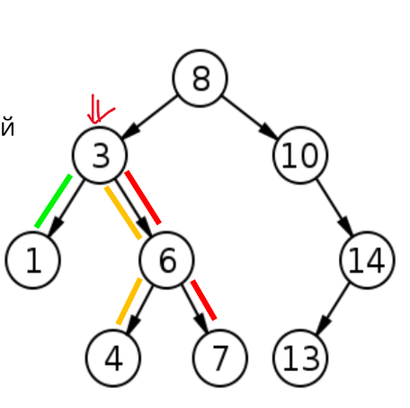
Высота узла (h) – это
максимальное из всех расстояний
от узла до его листьев
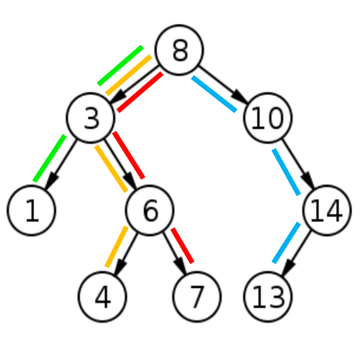
Высота дерева (h) – это
максимальное из всех
расстояний от корня до листьев
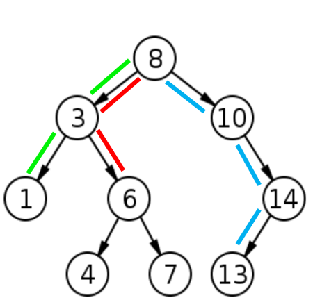
Глубина узла – это расстояние
от корня до этого узла
Для узла 6 глубина 2
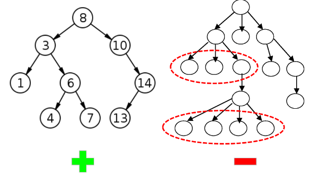
Двоичное дерево —
древовидная
структура данных, в
которой у
родительских узлов
может быть не
больше двух детей.
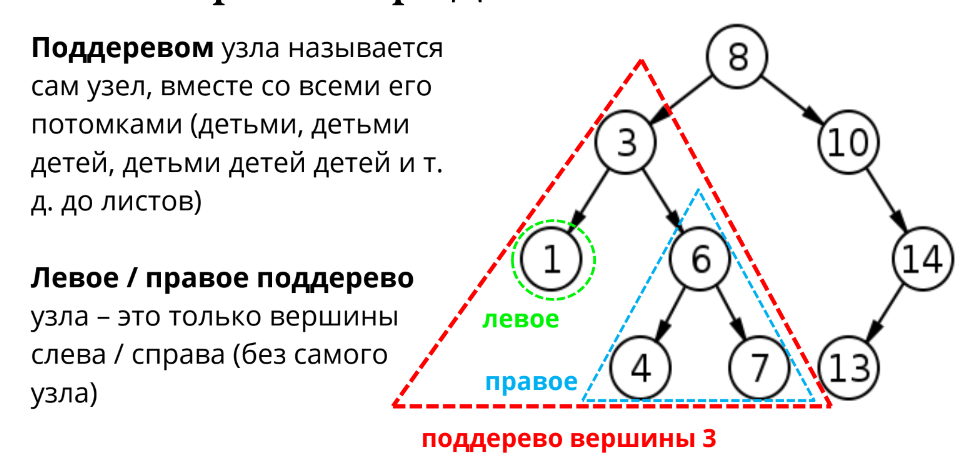
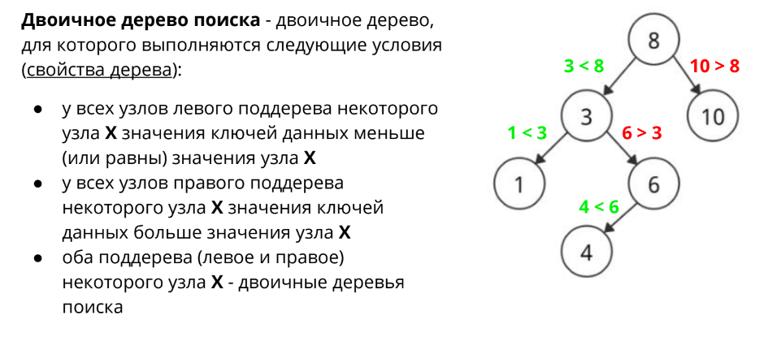
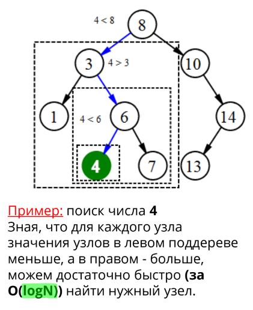
Поиск Удаление Вставка
Поиск
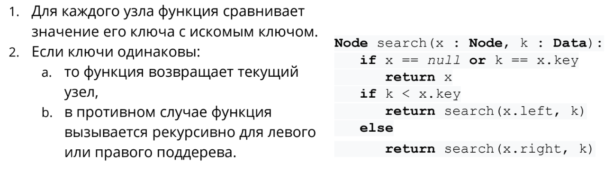
Высота дерева
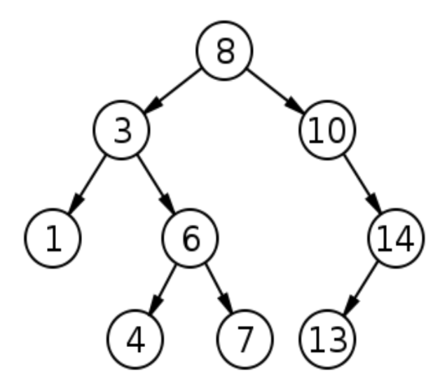
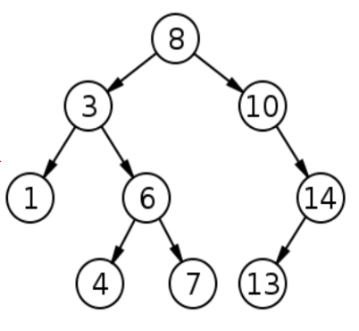
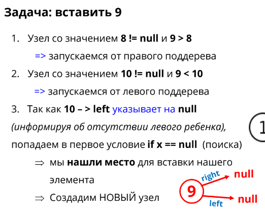
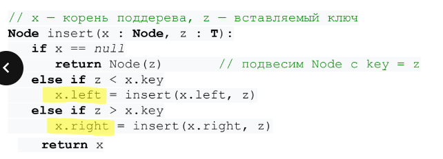
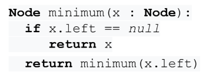
Чтобы найти минимальный элемент в
бинарном дереве поиска, необходимо
просто следовать указателям left от
корня дерева, пока не встретится
значение null.
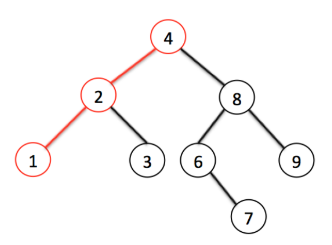
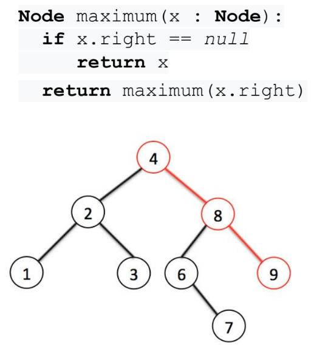
Чтобы найти максимальный элемент в
бинарном дереве поиска, необходимо
просто следовать указателям right от
корня дерева, пока не встретится
значение null.
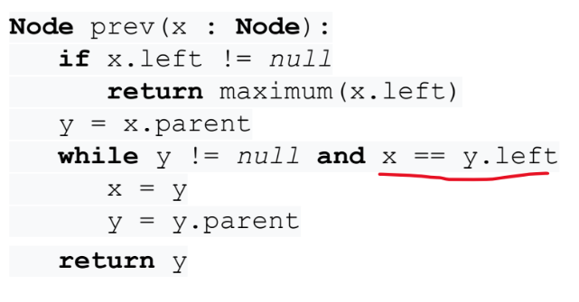
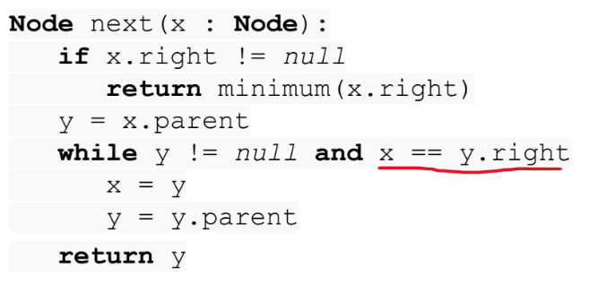
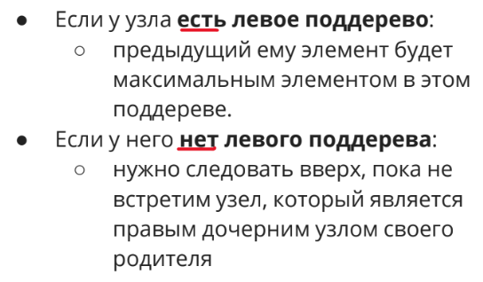
Идем направо
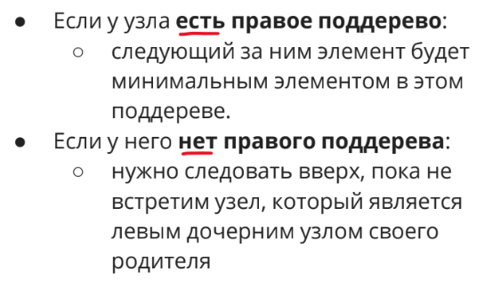
Идем на право до первого левого
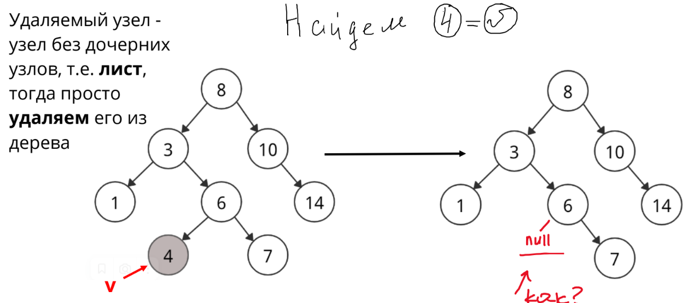
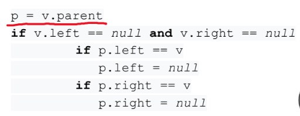
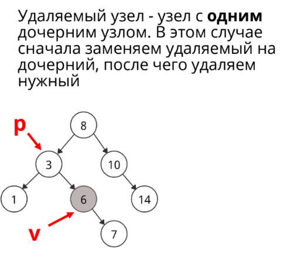
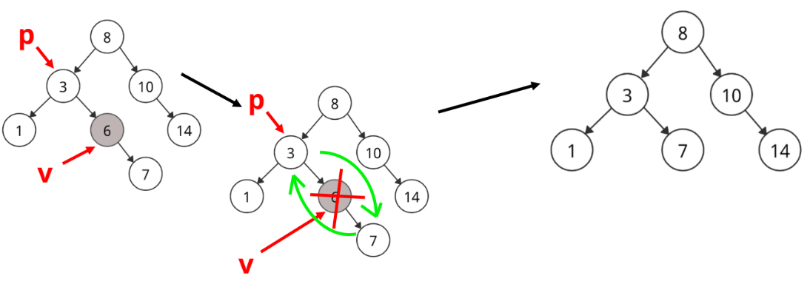
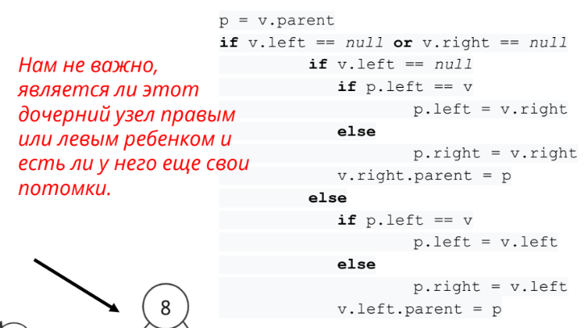
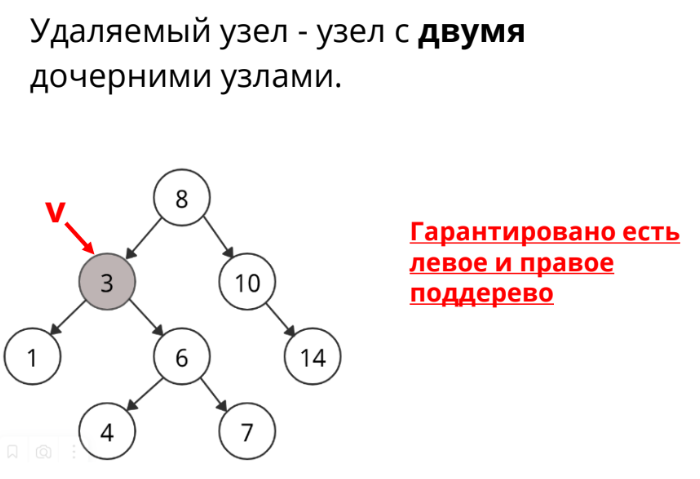
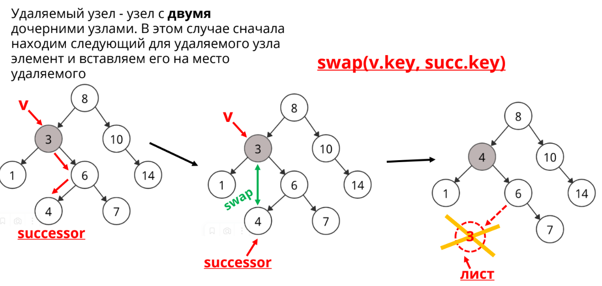
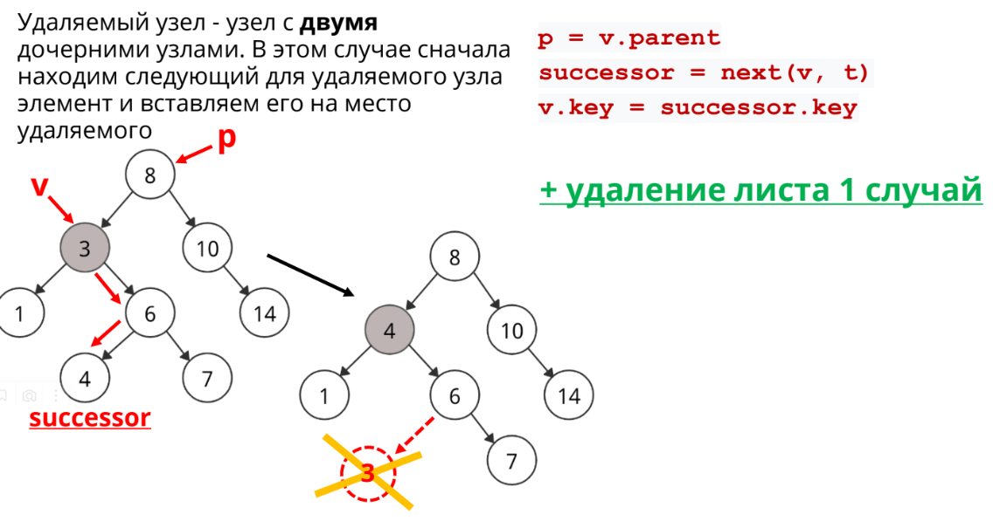
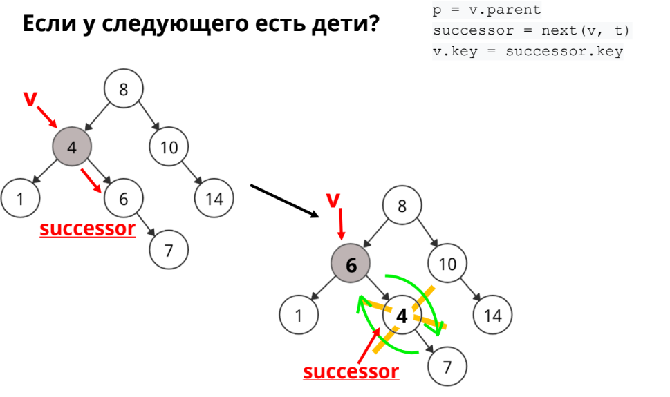
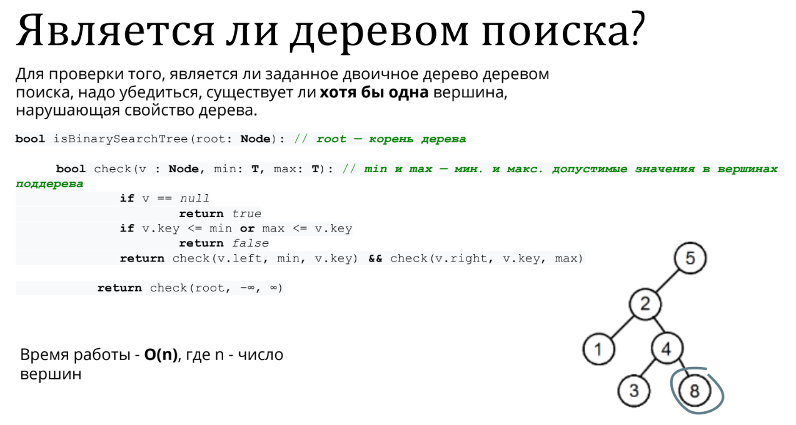
Обход дерева поиска
inorderTraversal
В результате данного обхода получаем
отсортированную последовательность
ключей дерева.
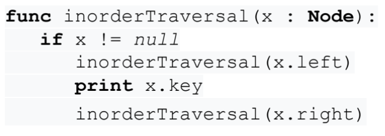
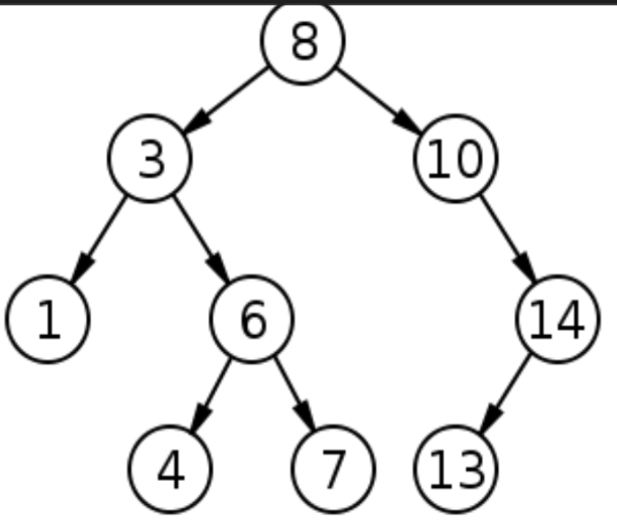
Сначала левый потом X потом правый
preorderTraversal
Позволяет восстановить дерево по
последовательности, выведенной после
выполнения данной процедуры
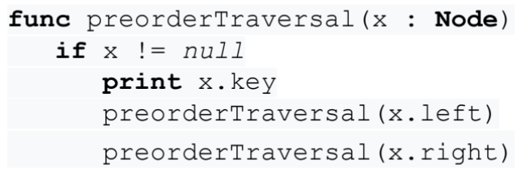
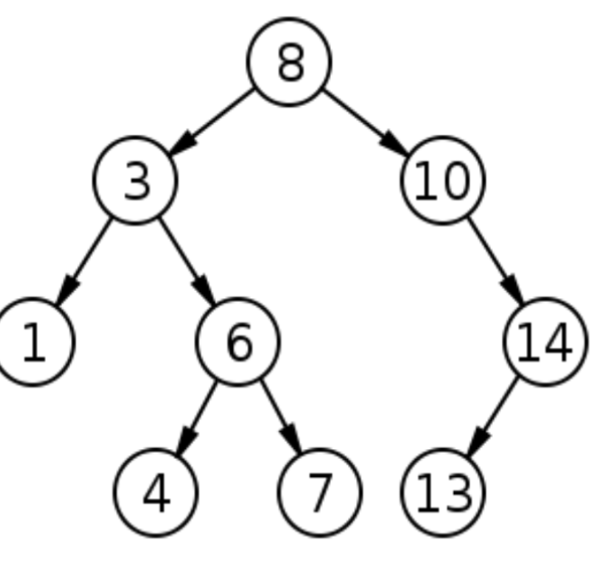
postorderTraversal
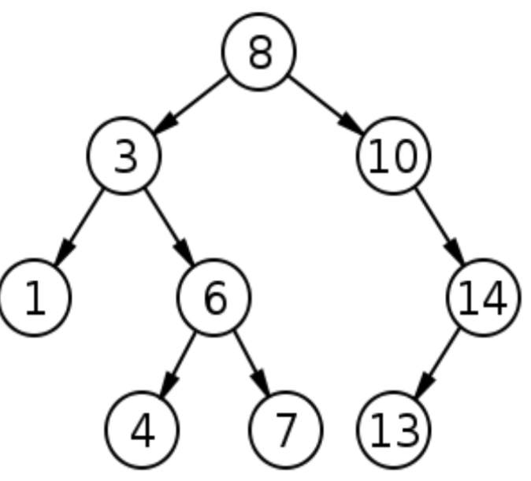
используется для удаления
дерева.
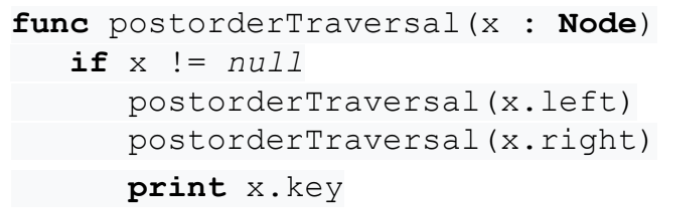
Левое Правое себя
Схемы и рукописные примеры